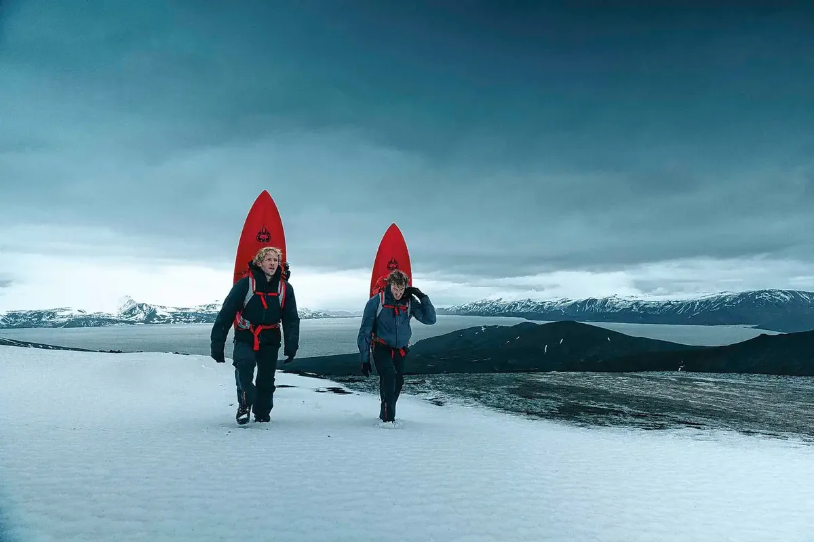

Surf antártico y activismo: los Gauchos del Mar surcan el mar más protegido
Los hermanos Azulay surfearon la ola más austral del planeta en la Antártida y llevaron esa gesta al centro de Buenos Aires para exigir protección sobre los mares antárticos. El film 'Antártida-Dominio Uno' combina aventura extrema con una demanda ambiental urgente que resuena directo en la Patagonia binacional. El océano Antártico, frontero natural del Sur Global, está en juego.

Hay imágenes que no necesitan traducción. Un ser humano de pie sobre una tabla, rodeado de hielo milenario, en el océano más salvaje del planeta. Esa es la postal que los hermanos Azulay —los Gauchos del Mar— eligieron para disparar una conversación que lleva demasiado tiempo postergada: qué pasa con los mares antárticos y quién los defiende.
El film 'Antártida-Dominio Uno' documenta lo que puede describirse sin hipérbole como la experiencia de surf más extrema jamás registrada en el Hemisferio Sur. Las olas que rompieron frente a las costas antárticas no tienen nombre en ningún atlas de surf conocido. Son aguas que los pueblos originarios del extremo austral —Kawésqar, Yagán— navegaron en embarcaciones de corteza durante miles de años, y que hoy enfrentan una presión creciente: pesca, turismo masivo, deshielo acelerado, y la ausencia de un marco internacional robusto de protección.
Julian Azulay. Los Gauchos del Mar. Foto: gentileza producción.
Para que esa historia no quedara encerrada en una pantalla, los Azulay instalaron una intervención artística frente al Obelisco porteño: hielo antártico, tablas de surf, y la pregunta directa al transeúnte urbano que rara vez mira hacia el sur. Una estrategia de comunicación que entiende algo que la política suele olvidar: los mares australes se defienden también desde la plaza pública.
Desde la perspectiva de GLOBALpatagonia, la historia tiene una capa extra. El océano Antártico no es un espacio abstracto en el fin del mundo —es la continuación natural del mar patagónico. Las corrientes que bañan las costas de Santa Cruz, Tierra del Fuego y Magallanes vienen de allí. La merluza negra que se pesca en el Canal Beagle, los pingüinos de Magallanes que crían en Puerto Madryn, los lobos marinos que pueblan la Isla de los Estados: todos dependen de un ecosistema que comienza mucho más al sur de donde termina el mapa turístico.
El activismo de los Gauchos del Mar no es nuevo. Llevan años surfeando olas remotas para documentar la salud de los océanos y denunciar su deterioro. Pero esta campaña tiene una apuesta política concreta: presionar por la creación de una zona marina protegida en el Océano Antártico, propuesta que lleva años discutiéndose en la CCRVMA —la Comisión para la Conservación de los Recursos Vivos Marinos Antárticos— sin acuerdo definitivo.
Argentina y Chile son signatarios del Tratado Antártico y tienen bases permanentes en el continente blanco. Ambos países tienen mucho que decir —y mucho que perder— si esos mares quedan sin protección efectiva. El surf fue la excusa. La urgencia es real.